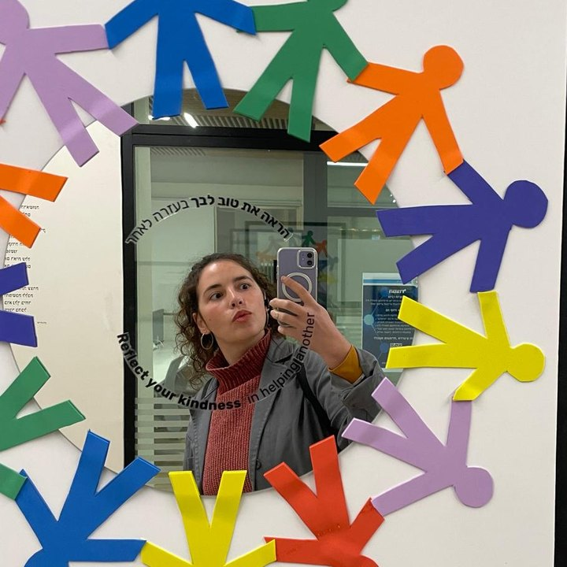

המערכות שלכם
יכולות לעבוד ביחד
יוצרת מערכת דיגיטלית שתפורה בשבילכם ועובדת עבורכם

אפשר לעשות את העבודה שלנו
קלה יותר?
אם גם אצלכם:
- אותו מידע מועתק שוב ושוב ממקום למקום
- כל ליד או כיוון לאירוע מייצר שרשרת משימות ידניות
- המידע מפוזר בין המייל, קלסרים, טפסים ותיקיות
- הארגון גדל, אבל שיטות העבודה נשארו מאחור
- אין זמן למשימות החשובות באמת
עם או בלי AI, יש כלים טכנולוגיים פשוטים שתוכלו להוסיף לשגרה הארגונית שלכם, כדי לחסוך מקסימום עבודה במינימום מאמץ
אוטומציות לדוגמה
יש צורך באתר חדש -
או שדרוג ועדכון לאתר הקיים?
נעים להכיר - אני נגה,
אני גרה בתל אביב, אוהבת סרטים וספרים, לרקוד, לשחות בים ולבשל,
וחוץ מהעבודה שלי בעולם הדיגיטל אני גם מלמדת יוגה פעמיים-שלוש בשבוע.
יש לי אהבה לכתיבה ולעברית וחוש טבעי לניסוח,
וסקרנות גדולה ללמוד דברים חדשים, ולהכיר מבנים שונים של עבודה בארגונים ועסקים.
בניסיון שלי כמנהלת דיגיטל בעולם העמותות והחל"צים למדתי לנהל קמפיינים אורגניים וממומנים בגוגל וברשתות חברתיות, משפכי שיווק למכירת סדנאות, קורסים, וובינרים והרצאות, ניהול הרשמה ומענה לשאלות, בניית דפי נחיתה ואתרים, עיצוב חוויית משתמש, ניהול אתר, שדרוג והעברת אתר, יצירה ועריכה של תוכן לרשתות החברתיות ולאתר, אופטימיזציית SEO וחשיבה מערכתית וארגונית.
אחד ה-hackים המשמעותיים שלמדתי בדרך הוא איך לבנות אוטומציות.
ברמה הכי פשוטה, המשמעות היא ליצור חיבור בין המערכות השונות שהצוות עובד איתן - שרשרת של פעולות שמופעלות עצמאית, למשל אחרי שמתקבל ליד/ לקוח חדש, כשיוצאים לדרך עם קמפיין ואפילו בשביל לייעל תהליכי עבודה פנימיים, כמו התכוננות לפגישה וסיכום שלה כדי להוציא מכל שעת עבודה את המקסימום, או רישום פרטים שלא דורש עוד משימה.
ההתקדמות שאפשר לעשות דרך אוטומציות מסייעת לארגונים להתייעל בעקביות, לצמוח ולהשתפר בהשקעה מדודה - אבל ממוצה היטב. כשמחברים בין המערכות, אפשר להפסיק לבצע שוב ושוב עבודה ידנית ולפנות את הזמן והקשב לדברים שבאמת דורשים את תשומת הלב שלנו.
היום ב-2026, אני לוקחת את הראייה המערכתית הזאת לעסקים ולארגונים שרוצים לעבוד פשוט, מסודר וחכם יותר, ומתחילה לבנות את קהל הלקוחות שלי במחירי השקה נגישים.